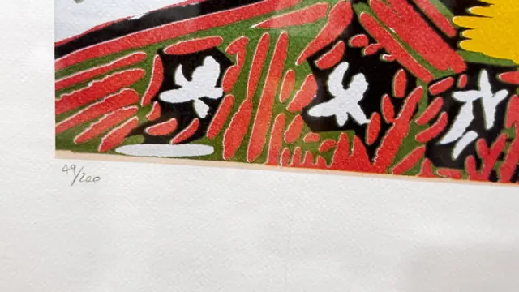
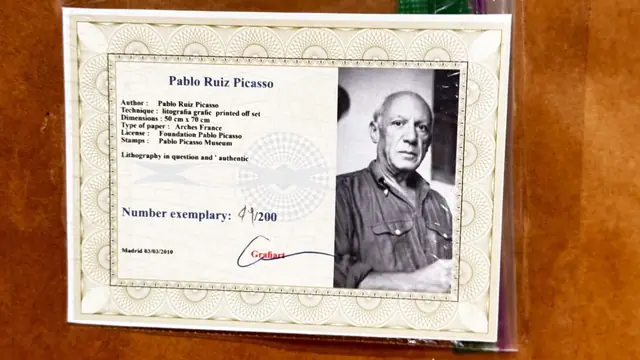

Paintings & Prints
Picasso Woman in Hat Offset Lithograph 49/200, Certificate, Framed
Pablo Picasso · 2010 issue after a 1960s image
Price Upon Request


About the Item
Pablo Ruiz Picasso. A large colour print in the manner of the late linocuts, photographed here in close detail along the lower edge: flat bands of red, green, black and white with heavy black outlines over a warm white wove sheet. Under magnification the colour areas break into a regular halftone dot screen, indicating a photomechanical offset process rather than a hand-pulled relief print. A pencil edition fraction sits in the lower left margin and a pencil signature in the lower right. The accompanying Spanish-issued certificate carries a photograph of the artist. Medium: offset lithograph on Arches paper. Signed lower right margin, reading "Picasso". Edition: 49/200. Accompanied by a certificate: Certificate headed 'Pablo Ruiz Picasso' reading: Author: Pablo Ruiz Picasso / Technique: litografia grafic printed off set / Dimensions: 50 cm x 70 cm / Type of paper: Arches France / License: Foundation Pablo Picasso / Stamps: Pablo Picasso Museum / Lithography in question and ' authentic / Number exemplary: 49/200 / Madrid 03/03/2010 / Grafiart. Inscribed on the reverse or mount: 49/200 (pencil, lower left margin); Picasso (pencil, lower right margin). Condition: Paper clean and bright in the details; certificate lightly creased. No foxing or tears visible.
About the Artist
Pablo Picasso (1881-1973), the Spanish co-founder of Cubism, reshaped twentieth century art across painting, sculpture, ceramics and printmaking. Images from his late linocut and lithograph series are among the most reproduced of the modern era.
Details
- Creator:
- Pablo Picasso
- Creation Year:
- 2010 issue after a 1960s image
- Medium:
- offset lithograph on Arches paper
- Edition:
- 49/200
- Period:
- 21St
- Condition:
- Offered in the condition shown in the photographs.
- Reference Number:
- VO-259
- Documentation:
- Certificate headed 'Pablo Ruiz Picasso' reading: Author: Pablo Ruiz Picasso / Technique: litografia grafic printed off set / Dimensions: 50 cm x 70 cm / Type of paper: Arches France / License: Foundation Pablo Picasso / Stamps: Pablo Picasso Museum / Lithography in question and ' authentic / Number exemplary: 49/200 / Madrid 03/03/2010 / Grafiart.
- Gallery Location:
- 49/200 (pencil, lower left margin); Picasso (pencil, lower right margin)